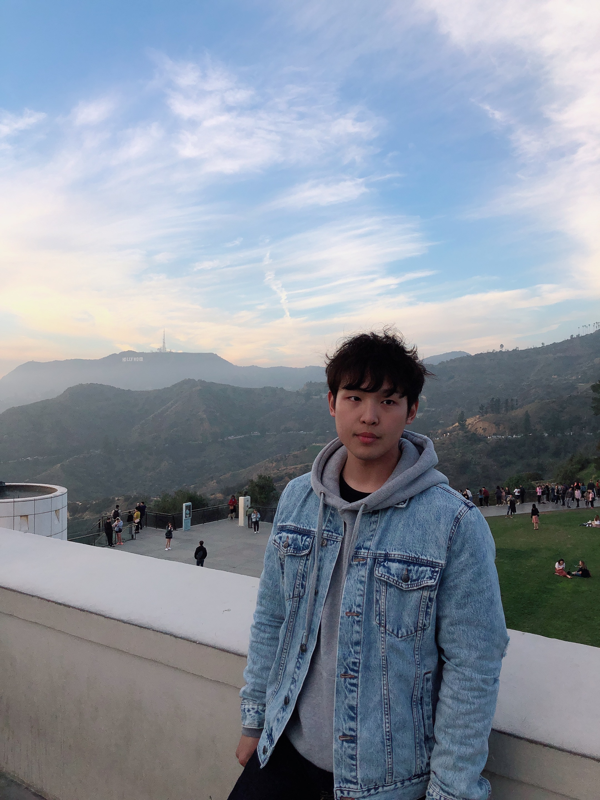

Name: Jonathan Park
Location: Orange County, California
About Jonathan
My passion & willingness for web development
I always liked to try new things and learn new things instead of being complacent.
I have been taking on various challenges and have become interested in programming that makes big results with small changes.
I was interested and fascinated by the area of coding that was constantly developing and renewed.
I feel happy when I find myself developing little by little while learning coding.
Other interest
I like to keep a regular and healthy lifestyle.
I go to exercise every morning and try to read for more than 2 hours before going to bed.
I try to do hobbies such as climbing and hiking even if I make time on purpose.
I feel happy when I find myself developing little by little while learning coding.